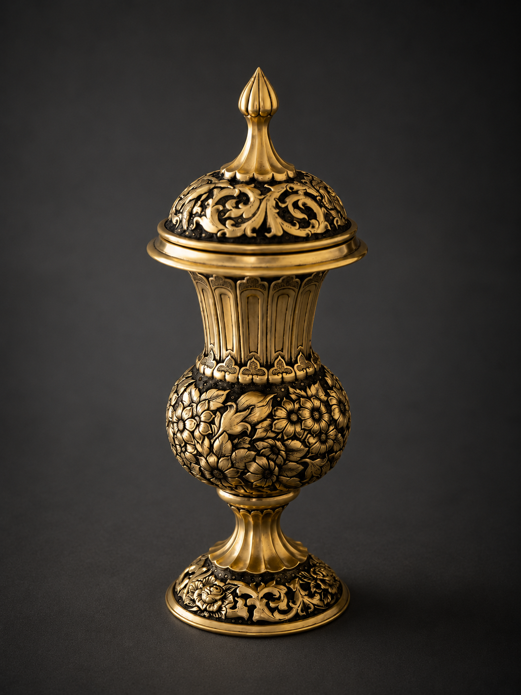

Contemporary Ceremonial Metalwork
Golden Garden Ceremonial Cup
A contemporary Iranian ceremonial vessel with 24-karat gilding, floral and arabesque ornamentation, and a lidded ritual form. The work belongs to Padyar Takuk’s wider language of metal, memory, ceremony and refined hand-shaped presence.

Artwork position
Not a decorative object, not tableware, not an antiquity.
Golden Garden Ceremonial Cup is presented as contemporary Iranian ceremonial metalwork. It should not be read as a utilitarian vessel, decorative cup, souvenir, historical replica, archaeological object or antique.
- Persian title: جام زرین گلستان
- English title: Golden Garden Ceremonial Cup
- Material note: 24-karat gilding; base metal and surface technique to be recorded in the internal archive.
- Form: Pedestal cup, rounded body, lidded ceremonial structure, floral and arabesque ornamentation.
متن فارسی
جام زرین گلستان
جام زرین گلستان اثری آیینی و معاصر از مجموعه پادیار تکوک است که زبان فلزکاری ایرانی را در قالب جامی پایهدار و درپوشدار ادامه میدهد. نقشهای گل، برگ و اسلیمی بر سطح اثر، میان تاریکی زمینه و درخشش زرین فلز، فضایی شاهانه، آرام و تشریفاتی میسازند.
این اثر بهعنوان فلزکاری فاخر معاصر ایرانی معرفی میشود؛ نه بهعنوان ظرف مصرفی، جام دکوری، عتیقه، کپی تاریخی، سوغاتی یا شیء باستانشناسی.

Catalogue text
Where metal becomes a ceremonial body.
In Golden Garden Ceremonial Cup, metal becomes a ceremonial body: upright, guarded and still. Floral and arabesque forms spread across the surface as if the metal were breathing inside a dark golden garden. The contrast of warm gilding and deep blackened recesses creates a balance between light and shadow, splendor and silence, ritual memory and material discipline.
متن کاتالوگی فارسی
در جام زرین گلستان، فلز به پیکرهای آیینی بدل میشود؛ نه صرفاً ظرفی برای نگاه، بلکه بدنی ایستاده، بسته، محافظ و تشریفاتی. گلها و اسلیمیها بر سطح اثر گسترده شدهاند، گویی فلز در میان باغی تاریک و زرین نفس میکشد. درخشش طلا و عمق سیاهی زمینه، میان نور و سایه، شکوه و سکوت، آیین و ماده تعادل ایجاد میکند.
این اثر ادامهای معاصر بر حافظه فلزکاری ایرانی است؛ اثری برای مشاهده، تأمل و نگهداری، نه برای مصرف روزمره و نه بهعنوان بازسازی تاریخی.
English website text
Golden Garden Ceremonial Cup is a contemporary ceremonial vessel from Padyar Takuk. Its lidded form, pedestal base, floral reliefs, and arabesque ornamentation bring together the memory of Persian metalwork, ritual presence, and refined material discipline.
The work is not presented as an antiquity, historical replica, tableware, or decorative object. Instead, it continues the visual language of Iranian metalwork as a contemporary artwork. The warm gilded surface, dark recessed ground, and layered floral motifs create a sense of depth, stillness, and royal presence.